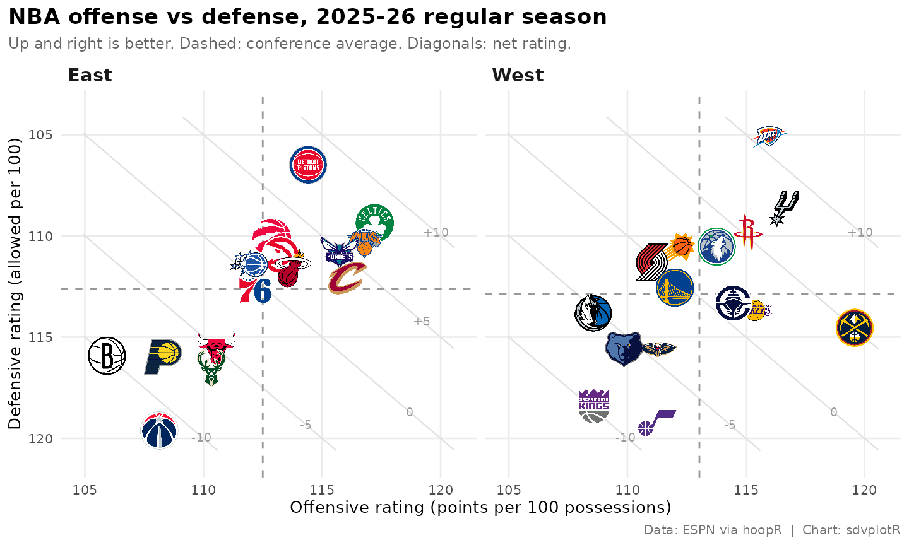

Interactive NBA Net Rating
Saiem Gilani


Source: vignettes/recipe-nba-net-rating-interactive.Rmd
recipe-nba-net-rating-interactive.RmdOn this page
The brief: the season-review blog post wants its
net-rating chart to be explorable: point at a team and read its
offensive, defensive and net rating instead of estimating them from the
axes. It is the interactive version of the NBA Net Rating Quadrant
recipe, with the same ratings from hoopR’s ESPN team box scores. The
chart is built natively with plotly’s plot_ly():
ggplotly() drops sdvplotR’s logo layers (see the interactive cookbook), so
add_sdv_logos() places the logos as plotly layout images
instead.
library(sdvplotR)
library(ggplot2)
library(dplyr, warn.conflicts = FALSE)
library(plotly, warn.conflicts = FALSE)
season <- 2026 # the 2025-26 season: NBA seasons are named by the year they end
label <- paste0(season - 1, "-", season %% 100)1. Get the data
The same ratings as the static recipe: points scored and allowed per 100 possessions, with possessions estimated from the box score (FGA - OREB + TOV + 0.44 FTA) and averaged with the opponent’s, so both teams in a game share one count.
box <- hoopR::load_nba_team_box(season) |>
filter(season_type == 2) # regular season
games <- box |>
mutate(
poss = field_goals_attempted - offensive_rebounds + total_turnovers +
0.44 * free_throws_attempted
)
filter(games, is.na(poss)) |>
select(game_id, game_date, team_abbreviation, opponent_team_abbreviation)
#> # A tibble: 1 × 4
#> game_id game_date team_abbreviation opponent_team_abbreviation
#> <int> <date> <chr> <chr>
#> 1 401810169 2025-12-01 CHI ORLOne box score is missing a stat, so that game has no possession
count. It is dropped for both teams together, as in the static recipe,
so no NA reaches the season sums.
opponents <- select(games, game_id, opponent_team_id = team_id, opp_poss = poss)
stopifnot(identical(class(games$opponent_team_id), class(opponents$opponent_team_id)))
ratings <- games |>
inner_join(opponents, by = c("game_id", "opponent_team_id")) |>
mutate(game_poss = (poss + opp_poss) / 2) |>
filter(!is.na(game_poss)) |>
group_by(team = team_abbreviation) |>
summarise(
ortg = 100 * sum(team_score) / sum(game_poss),
drtg = 100 * sum(opponent_team_score) / sum(game_poss)
) |>
mutate(net = ortg - drtg)
stopifnot(!anyNA(ratings$net))ESPN files the All-Star Game’s teams as regular-season games, so
sdv_resolve() returns NA for them (with a
warning naming the values) and they are dropped.
sdv_teams() adds each team’s full name and conference for
the hover text, and sdv_team_colors() its primary
color.
ratings <- ratings |>
mutate(team_id = sdv_resolve(team, league = "nba"))
filter(ratings, is.na(team_id))$team
#> [1] "STARS" "STRIPES" "WORLD"
conferences <- sdv_teams("nba") |>
transmute(
team_id, team_abbr = abbr, name,
conference = sub("ern Conference$", "", conference)
)
ratings <- ratings |>
filter(!is.na(team_id)) |>
inner_join(conferences, by = "team_id") |>
mutate(color = unname(sdv_team_colors("nba", team_abbr))) |>
arrange(desc(net), team_abbr) |>
mutate(tip = sprintf(
"<b>%s</b> (%s)<br>Offensive rating: %.1f<br>Defensive rating: %.1f<br>Net rating: %+.1f",
name, conference, ortg, drtg, net
))
stopifnot(nrow(ratings) == 30)
select(ratings, team_abbr, conference, ortg, drtg, net) |> head()
#> # A tibble: 6 × 5
#> team_abbr conference ortg drtg net
#> <chr> <chr> <dbl> <dbl> <dbl>
#> 1 OKC West 116. 105. 10.9
#> 2 DET East 114. 106. 7.93
#> 3 SA West 117. 109. 7.86
#> 4 BOS East 117. 109. 7.85
#> 5 NY East 117. 110. 6.40
#> 6 HOU West 115. 110. 5.21The page embeds this 30-row table, not the box scores.
2. Hover first
Start with the part a reader touches. A scatter trace carries one
marker per team, and text with
hoverinfo = "text" replaces plotly’s default hover (raw x
and y values) with the tooltip built above: name, conference and the
three ratings. hoverlabel colors each tooltip in the team’s
color. A range given high-to-low reverses the axis, so the
best defenses are on top, as in the static recipe.
x_lim <- range(ratings$ortg) + c(-1, 1)
y_lim <- range(ratings$drtg) + c(-1, 1)
plot_ly(
ratings, x = ~ortg, y = ~drtg, type = "scatter", mode = "markers",
marker = list(size = 12, color = ~color),
text = ~tip, hoverinfo = "text",
hoverlabel = list(bgcolor = ~color, font = list(color = "white"))
) |>
layout(
title = list(text = paste("NBA offense vs defense,", label, "regular season"), x = 0.02),
xaxis = list(title = "Offensive rating (points per 100 possessions)", range = x_lim),
yaxis = list(title = "Defensive rating (allowed per 100)", range = rev(y_lim))
)The dots already answer “who is that?”, but a reader still has to hover each one to find a team.
3. Logos, average lines and net-rating guides
add_sdv_logos() puts each team’s logo at its point, in
data units. Its size is the logo height as a share of the
y-axis span. The markers stay as the hover targets, now transparent
(opacity = 0), and plotly has no geom for reference lines,
so they go in as layout shapes. Dashed lines mark the
league-average offense and defense, and the faint diagonals are the
static recipe’s net-rating guides: teams on one line share a net rating,
in steps of 5. Each diagonal is cut to the axis box first.
# the line drtg = ortg - net, cut to the box x_lim by y_lim
guides <- data.frame(net = c(-10, -5, 0, 5, 10)) |>
mutate(
x0 = pmax(x_lim[1], y_lim[1] + net),
x1 = pmin(x_lim[2], y_lim[2] + net)
) |>
filter(x0 < x1) |>
mutate(
y0 = x0 - net, y1 = x1 - net,
lx = x0 + 0.88 * (x1 - x0), ly = lx - net, # a label near the lower-right end
label = if_else(net > 0, paste0("+", net), as.character(net))
)
line_shape <- function(x0, y0, x1, y1, color, dash = "solid") {
list(
type = "line", x0 = x0, y0 = y0, x1 = x1, y1 = y1, layer = "below",
line = list(color = color, width = 1, dash = dash)
)
}
shapes <- c(
Map(line_shape, guides$x0, guides$y0, guides$x1, guides$y1, "#e0e0e0"),
list(
line_shape(mean(ratings$ortg), y_lim[1], mean(ratings$ortg), y_lim[2], "#999999", "dash"),
line_shape(x_lim[1], mean(ratings$drtg), x_lim[2], mean(ratings$drtg), "#999999", "dash")
)
)
guide_labels <- lapply(seq_len(nrow(guides)), function(i) {
list(
x = guides$lx[i], y = guides$ly[i], text = guides$label[i],
showarrow = FALSE, font = list(color = "#999999", size = 10)
)
})
quadrant <- plot_ly(
ratings, x = ~ortg, y = ~drtg, type = "scatter", mode = "markers",
marker = list(size = 30, opacity = 0),
text = ~tip, hoverinfo = "text",
hoverlabel = list(bgcolor = ~color, font = list(color = "white"))
) |>
layout(
title = list(
text = paste0(
"NBA offense vs defense, ", label, " regular season",
"<br><sup>Up and right is better. Dashed: league average. Diagonals: net rating.</sup>"
),
x = 0.02
),
xaxis = list(title = "Offensive rating (points per 100 possessions)", range = x_lim, zeroline = FALSE),
yaxis = list(title = "Defensive rating (allowed per 100)", range = rev(y_lim), zeroline = FALSE),
shapes = shapes, annotations = guide_labels,
margin = list(t = 70)
) |>
add_sdv_logos(ratings$ortg, ratings$drtg, ratings$team_abbr, "nba", size = 0.07)
quadrantHovering works as before, since the transparent markers sit where the logos are. plotly’s toolbar adds zoom: drag a box around the crowded middle of the chart and the logos spread apart; double-click to zoom back out.
4. Net rating as bars, logos on the axis
The quadrant shows two numbers per team; a bar chart ranks the one
that sums them up. Order the teams by net rating with a factor, color
each bar in its team’s color, and sdv_axis_logos() replaces
the category labels with logos (it hides the tick labels and puts a logo
under each bar). textposition = "none" keeps the hover text
out of the bars.
bars <- ratings |>
mutate(team_abbr = factor(team_abbr, levels = team_abbr)) # already sorted by net rating
plot_ly(
bars, x = ~team_abbr, y = ~net, type = "bar",
marker = list(color = ~color),
text = ~tip, hoverinfo = "text", textposition = "none",
hoverlabel = list(bgcolor = ~color, font = list(color = "white"))
) |>
layout(
title = list(text = paste("NBA net rating,", label, "regular season"), x = 0.02),
xaxis = list(title = ""),
yaxis = list(title = "Net rating (points per 100 possessions)"),
margin = list(t = 50, b = 50)
) |>
sdv_axis_logos(levels(bars$team_abbr), "nba")5. Share it
htmlwidgets::saveWidget() writes a chart to one HTML
file, and selfcontained = TRUE inlines plotly’s JavaScript
so no folder sits beside it (it needs pandoc, which ships with RStudio).
plotly’s logos are layout images that load from their URLs, so the file
is small but needs the network when it is opened.
out <- tempfile("sdvplotR-recipe-")
dir.create(out)
html <- file.path(out, "nba_net_rating_interactive.html")
htmlwidgets::saveWidget(quadrant, html, selfcontained = TRUE, title = "NBA offense vs defense")
round(file.size(html) / 1024) # kilobytes, most of it plotly.js
#> [1] 37056. The static version
plotly has no ggsave(), and a screenshot of the widget
needs a headless browser (the cookbook’s last recipe shows it with
webshot2). For a post or a slide, draw the static recipe’s ggplot
instead, from the same ratings and guides
tables: geom_sdv_logos() for the logos,
geom_mean_lines() for each conference’s averages, and a
panel per conference.
ggplot(ratings, aes(ortg, drtg)) +
geom_segment(
aes(x = x0, y = y0, xend = x1, yend = y1),
data = guides, inherit.aes = FALSE, color = "grey88", linewidth = 0.4
) +
geom_text(
aes(x = lx, y = ly, label = label),
data = guides, inherit.aes = FALSE, color = "grey60", size = 2.6
) +
geom_mean_lines(aes(x0 = ortg, y0 = drtg), color = "grey60", linewidth = 0.5) +
geom_sdv_logos(aes(team = team_abbr), league = "nba", width = 0.1) +
facet_wrap(vars(conference)) +
scale_x_continuous(expand = expansion(mult = 0.06)) +
scale_y_reverse(expand = expansion(mult = 0.08)) +
labs(
title = paste("NBA offense vs defense,", label, "regular season"),
subtitle = "Up and right is better. Dashed: conference average. Diagonals: net rating.",
x = "Offensive rating (points per 100 possessions)",
y = "Defensive rating (allowed per 100)",
caption = "Data: ESPN via hoopR | Chart: sdvplotR"
) +
theme_minimal(base_size = 10) +
theme(
plot.title.position = "plot",
plot.title = element_text(face = "bold", size = 13),
plot.subtitle = element_text(color = "grey40", size = 9),
plot.caption = element_text(color = "grey45", size = 7.5),
strip.text = element_text(face = "bold", size = 11, hjust = 0),
panel.grid.minor = element_blank()
)
Related
- NBA Net Rating Quadrant: the static recipe, with the conference leaders labelled and the blog and Instagram exports.
- Interactive charts: ggiraph, plotly, leaflet and reactable with sdvplotR.
- Reference: add_sdv_logos(), sdv_axis_logos(), sdv_team_colors(), geom_sdv_logos(), geom_mean_lines(), sdv_resolve(), sdv_teams().
Related SportsDataverse packages
- sdvplot - the Python plotting package
- sdvplot-js - the JavaScript / TypeScript plotting packages
- cfbfastR - college football
- hoopR - men’s basketball
- wehoop - women’s basketball
- baseballr - baseball
- fastRhockey - hockey
- oddsapiR - betting odds
- sportyR - playing surfaces
- sportsdataverse-py - the Python package
- sportsdataverse-R - the R meta-package